The Immune System and Disease
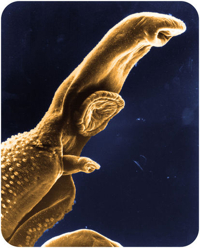
Does this organism look like a space alien? A scary creature from a nightmare? In fact, it’s a 1-cm long worm that lives in the human body and causes serious harm. It enters the body through a hair follicle of the skin when it’s in a much smaller stage of its life cycle.
Like this worm, many other organisms can make us sick if they manage to enter our body. Fortunately for us, our immune system is able to keep out most such invaders. When you read this chapter, you’ll learn how your immune system keeps you safe from harm—including from scary creatures like this!
Nonspecific Defenses
Lesson Objectives
-
Describe the barriers that keep most pathogens out of the human body.
-
Explain how the inflammatory response and nonspecific leukocytes help fight pathogens that enter the body.
Vocabulary
-
inflammatory response
-
leukocyte
-
mucous membrane
-
mucus
-
pathogen
-
phagocytosis
Introduction
The immune system protects the body from worms, germs, and other agents of harm. The immune system is like a medieval castle. The outside of the castle was protected by a moat and high stone walls. Inside the castle, soldiers were ready to fight off any invaders that managed to get through the outer defenses. Like a medieval castle, the immune system has a series of defenses. In fact, it has three lines of defense. Only pathogens that are able to get through all three lines of defense can harm the body.
The First Line of Defense
The body’s first line of defense consists of different types of barriers that keep most pathogens out of the body.
Pathogens
are disease-causing agents, such as bacteria and viruses. These and other types of pathogens are described in
Figure
below
. Regardless of the type of pathogen, however, the first line of defense is always the same.
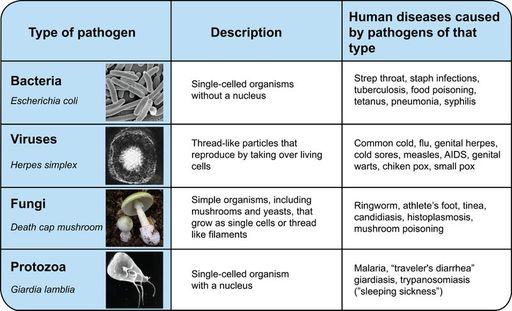
Types of pathogens that commonly cause human diseases include bacteria, viruses, fungi, and protozoa. Which type of pathogen causes the common cold? Which type causes athlete’s foot?
Mechanical Barriers
Mechanical barriers physically block pathogens from entering the body. The skin is the most important mechanical barrier. In fact, it is the single most important defense the body has. The outer layer of the skin is tough and very difficult for pathogens to penetrate.
Mucous membranes
provide a mechanical barrier at body openings. They also line the respiratory, GI, urinary, and reproductive tracts. Mucous membranes secrete
mucus
, a slimy substance that traps pathogens. The membranes also have hair-like cilia. The cilia sweep mucus and pathogens toward body openings where they can be removed from the body. When you sneeze or cough, pathogens are removed from the nose and throat (see
Figure
below
). Tears wash pathogens from the eyes, and urine flushes pathogens out of the urinary tract. You can watch the sweeping action of cilia at the following link:
http://mcdb.colorado.edu/courses/2115/units/Other/mucus%20animation.swf
.
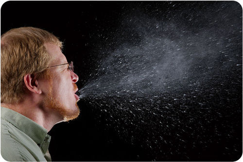
A sneeze can expel many pathogens from the respiratory tract. That’s why you should always cover your mouth and nose and when you sneeze.
Chemical Barriers
Chemical barriers destroy pathogens on the outer body surface, at body openings, and on inner body linings. Sweat, mucus, tears, and saliva all contain enzymes that kill pathogens. Urine is too acidic for many pathogens, and semen contains zinc, which most pathogens cannot tolerate. In addition, stomach acid kills pathogens that enter the GI tract in food or water.
Biological Barriers
Biological barriers are living organisms that help protect the body. Millions of harmless bacteria live on the human skin. Many more live in the GI tract. The harmless bacteria use up food and space so harmful bacteria cannot grow.
The Second Line of Defense
If you have a cut on your hand, the break in the skin provides a way for pathogens to enter your body. Assume bacteria enter through the cut and infect the wound. These bacteria would then encounter the body’s second line of defense.
Inflammatory Response
The cut on your hand may become red, warm, and swollen. These are signs of an
inflammatory response.
This is the first reaction of the body to tissue damage or infection. As explained in
Figure
below
, the response is triggered by chemicals called cytokines and histamines, which are released when tissue is injured or infected. The chemicals communicate with other cells and coordinate the inflammatory response. You can see an animation of the inflammatory response at this link:
http://www.sumanasinc.com/webcontent/animations/content/inflammatory.html
.
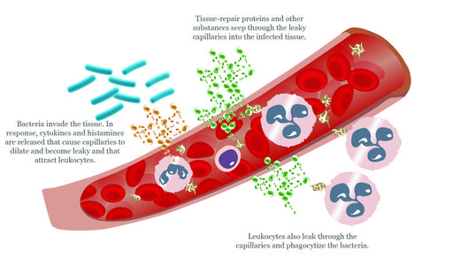
This drawing shows what happens during the inflammatory response. Why are changes in capillaries important for this response?
The inflammatory response is discussed at
http://www.youtube.com/user/khanacademy#p/c/7A9646BC5110CF64/56/FXSuEIMrPQk
.
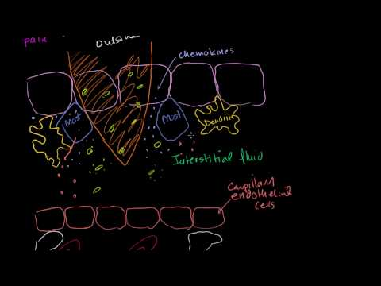
Click on the image above for more content
Leukocytes
The chemicals that trigger an inflammatory response attract leukocytes to the site of injury or infection.
Leukocytes
are white blood cells. Their role is to fight infections and get rid of debris. Leukocytes may respond with either a nonspecific or a specific defense.
-
A nonspecific defense is the same no matter what type of pathogen is involved. An example of a nonspecific defense is
phagocytosis.
This is the process in which leukocytes engulf and break down pathogens and debris. It is illustrated in
Figure
below
. You can also see an animation of phagocytosis at this link:
http://www.sp.uconn.edu/~terry/Common/phago053.html
.
-
A specific defense is tailored to a particular pathogen. Leukocytes involved in this type of defense are described in the next lesson.
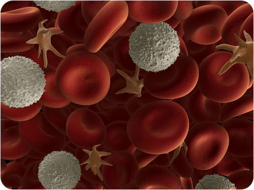
In this image, leukocytes (white) are attacking pathogens (star-shaped).
A summary of the nonspecific defenses can be viewed at
http://www.youtube.com/user/khanacademy#p/c/7A9646BC5110CF64/49/O1N2rENXq_Y
(16:20).
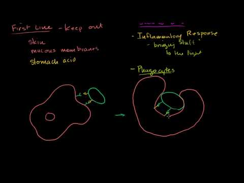
Click on the image above for more content
Lesson Summary
-
Barriers that keep out pathogens are the body’s first line of defense. They include mechanical, chemical, and biological barriers.
-
The second line of defense attacks pathogens that manage to enter the body. It includes the inflammatory response and phagocytosis by nonspecific leukocytes.
Review Questions
Recall
1. Identify three types of barriers in the body’s first line of defense. Give an example of each type of barrier.
2. What is the body’s second life of defense? When does it take effect?
3. Identify the roles of nonspecific leukocytes in the body’s second line of defense.
4. State how phagocytosis helps defend the body from pathogens.
5. What is a nonspecific defense?
Apply Concepts
6. Jera cut her finger. The next day, the skin around the cut had become red and warm. Why are these signs of infection?
Think Critically
7. Explain how the inflammatory response helps fight an infection.
Points to Consider
The body’s first and second lines of defense are the same regardless of the particular pathogen involved. The body’s third line of defense is different. It tailors the response to the specific pathogen.
-
How do you think the immune system can identify specific pathogens?
-
How might a specific defense be different from a nonspecific defense? What mechanisms might be involved?
The Immune Response
Lesson Objectives
-
Describe the lymphatic system and its roles in the immune response.
-
List the steps that occur in a humoral immune response.
-
Identify the roles of T cells in a cell-mediated immune response.
-
Define immunity, and distinguish between active and passive immunity.
Vocabulary
-
active immunity
-
antibody
-
B cell
-
cell-mediated immune response
-
humoral immune response
-
immune response
-
immunity
-
immunization
-
lymph
-
lymphatic system
-
lymph node
-
lymphocyte
-
memory cell
-
passive immunity
-
T cell
Introduction
Like the immune systems of other vertebrates, the human immune system is adaptive. If pathogens manage to get through the body’s first two lines of defense, the third line of defense takes over. The third line of defense is referred to as the
immune response.
This defense is specific to a particular pathogen, and it allows the immune system to “remember” the pathogen after the infection is over. If the pathogen tries to invade the body again, the immune response against that pathogen will be much faster and stronger. You can watch an overview of the immune response at this link:
http://www.youtube.com/watch?v=G7rQuFZxVQQ&feature=related
.
The types of immune responses is discussed at
http://www.youtube.com/user/khanacademy#p/c/7A9646BC5110CF64/50/rp7T4IItbtM
.
Click on the image above for more content
Lymphatic System
The immune response mainly involves the lymphatic system. The
lymphatic system
is a major part of the immune system. It produces leukocytes called lymphocytes.
Lymphocytes
are the key cells involved in the immune response. They recognize and help destroy particular pathogens in body fluids and cells. They also destroy certain cancer cells. You can watch an animation of the lymphatic system at this link:
http://www.youtube.com/watch?v=qTXTDqvPnRk&feature=related
.
Structures of the Lymphatic System
Figure
below
shows the structures of the lymphatic system. They include organs, lymph vessels, lymph, and lymph nodes. Organs of the lymphatic system are the bone marrow, thymus, spleen, and tonsils.
-
Bone marrow is found inside many bones. It produces lymphocytes.
-
The thymus is located in the upper chest behind the breast bone. It stores and matures lymphocytes.
-
The spleen is in the upper abdomen. It filters pathogens and worn out red blood cells from the blood, and then lymphocytes in the spleen destroy them.
-
The tonsils are located on either side of the pharynx in the throat. They trap pathogens, which are destroyed by lymphocytes in the tonsils.
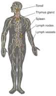
The lymphatic system consists of organs, vessels, and lymph.
Lymphatic Vessels and Lymph
Lymphatic vessels make up a body-wide circulatory system. The fluid they circulate is lymph.
Lymph
is a fluid that leaks out of capillaries into spaces between cells. As the lymph accumulates between cells, it diffuses into tiny lymphatic vessels. The lymph then moves through the lymphatic system from smaller to larger vessels. It finally drains back into the bloodstream in the chest. As lymph passes through the lymphatic vessels, pathogens are filtered out at small structures called
lymph nodes
(see
Figure
above
). The filtered pathogens are destroyed by lymphocytes.
Lymphocytes
The human body has as many as two trillion lymphocytes, and lymphocytes make up about 25% of all leukocytes. The majority of lymphocytes are found in the lymphatic system, where they are most likely to encounter pathogens. The rest are found in the blood. There are two major types of lymphocytes, called
B cells
and
T cells.
These cells get their names from the organs in which they mature. B cells mature in bone marrow, and T cells mature in the thymus. Both B and T cells recognize and respond to particular pathogens.
Antigen Recognition
B and T cells actually recognize and respond to antigens on pathogens. Antigens are molecules that the immune system recognizes as foreign to the body. Antigens are also found on cancer cells and the cells of transplanted organs. They trigger the immune system to react against the cells that carry them. This is why a transplanted organ may be rejected by the recipient’s immune system. How do B and T cells recognize specific antigens? They have receptor molecules on their surface that bind only with particular antigens. As shown in
Figure
below
and in the animation at the link that follows, the fit between an antigen and a matching receptor molecule is like a key in a lock.
http://www.youtube.com/watch?v=cL9KY_ECzfo
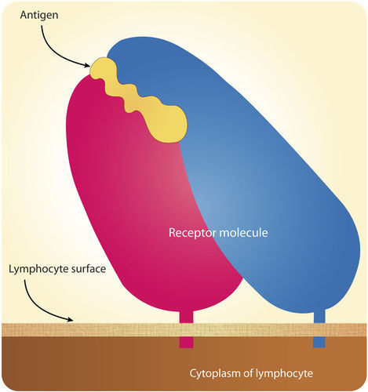
An antigen fits the matching receptor molecule like a key in a lock.
Humoral Immune Response
There are actually two types of immune responses: humoral and cell-mediated. The latter response is described later in this section. The
humoral immune response
involves mainly B cells and takes place in blood and lymph. You can watch an animation of the humoral immune response at the link below.
http://www.cancerresearch.org/resources.aspx?id=586
B Cell Activation
B cells must be activated by an antigen before they can fight pathogens. This happens in the sequence of events shown in
Figure
below
. First, a B cell encounters its matching antigen and engulfs it. The B cell then displays fragments of the antigen on its surface. This attracts a helper T cell (which is further discussed below). The helper T cell binds to the B cell at the antigen site and releases cytokines that “tell” the B cell to develop into a plasma cell.
B lymphocytes are further discussed at
http://www.youtube.com/watch?v=Z36dUduOk1Y
(14:13).
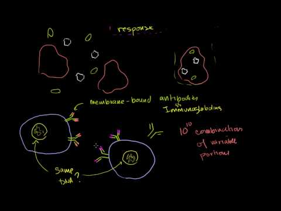
Click on the image above for more content
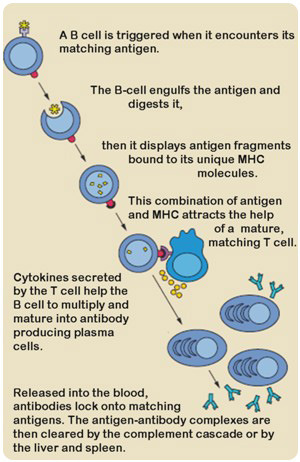
Activation of a B cell must occur before it can respond to pathogens. What role do T cells play in the activation process?
Plasma Cells and Antibody Production
Plasma cells are activated B cells that secrete antibodies.
Antibodies
are large, Y-shaped proteins that recognize and bind to antigens. Plasma cells are like antibody factories, producing many copies of a single type of antibody. The antibodies travel throughout the body in blood and lymph. Each antibody binds to just one kind of antigen. When it does, it forms an antigen-antibody complex (see
Figure
below
). The complex flags the antigen-bearing cell for destruction by phagocytosis. The video at the following link shows how this happens:
http://www.youtube.com/watch?v=lrYlZJiuf18&feature=fvw
.
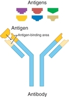
An antibody matches only one type of antigen.
Memory Cells
Most plasma cells live for just a few days, but some of them live much longer. They may even survive for the lifetime of the individual. Long-living plasma cells are called
memory cells.
They retain a “memory” of a specific pathogen long after an infection is over. They help launch a rapid response against the pathogen if it invades the body again in the future.
Cell-Mediated Immune Response
The other type of immune response, the
cell-mediated immune response
, involves mainly T cells. It leads to the destruction of cells that are infected with viruses. Some cancer cells are also destroyed in this way. There are several different types of T cells involved in a cell-mediated immune response, including helper, cytotoxic, and regulatory T cells. You can watch an animation of this type of immune response at this link:
http://www.cancerresearch.org/Resources.aspx?id=588
.
T Cell Activation
All three types of T cells must be activated by an antigen before they can fight an infection or cancer. T cell activation is illustrated in
Figure
below
. It begins when a B cell or nonspecific leukocyte engulfs a virus and displays its antigens. When the T cell encounters the matching antigen on a leukocyte, it becomes activated. What happens next depends on which type of T cell it is.
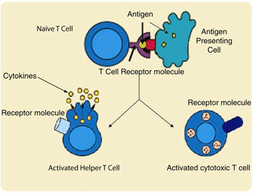
T cell activation requires another leukocyte to engulf a virus and display its antigen.
Helper T Cells
Helper T cells are like the “managers” of the immune response. They secrete cytokines, which activate or control the activities of other lymphocytes. Most helper T cells die out once a pathogen has been cleared from the body, but a few remain as memory cells. These memory cells are ready to produce large numbers of antigen-specific helper T cells like themselves if they are exposed to the same antigen in the future.
Helper T cells are discussed at
http://www.youtube.com/user/khanacademy#p/c/7A9646BC5110CF64/53/uwMYpTYsNZM
.
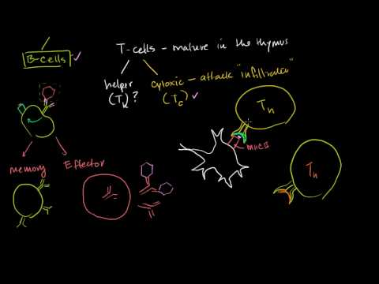
Click on the image above for more content
Cytotoxic T Cells
Cytotoxic T cells destroy virus-infected cells and some cancer cells. Once activated, a cytotoxic T cell divides rapidly and produces an “army” of cells identical to itself. These cells travel throughout the body “searching” for more cells to destroy.
Figure
below
shows how a cytotoxic T cell destroys a body cell infected with viruses. The T cell releases toxins that form pores in the membrane of the infected cell. This causes the cell to burst, destroying both the cell and the viruses inside it. You can watch an animation of the actions of cytotoxic T cells at this link:
http://www.youtube.com/watch?v=8buaiYBKl7U
.
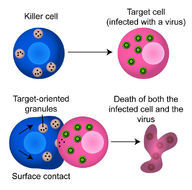
A cytotoxic T cell releases toxins that destroy an infected body cell and the viruses it contains.
After an infection has been brought under control, most cytotoxic T cells die off. However, a few remain as memory cells. If the same pathogen enters the body again, the memory cells mount a rapid immune response. They quickly produce many copies of cytotoxic T cells specific to the antigen of that pathogen.
Regulatory T Cells
Regulatory T cells are responsible for ending the cell-mediated immune response after an infection has been curbed. They also suppress T cells that mistakenly react against self antigens. What might happen if these T cells were not suppressed?
Immunity
Memory B and T cells help protect the body from re-infection by pathogens that infected the body in the past. Being able to resist a pathogen in this way is called
immunity.
Immunity can be active or passive.
Active Immunity
Active immunity
results when an immune response to a pathogen produces memory cells. As long as the memory cells survive, the pathogen will be unable to cause a serious infection in the body. Some memory cells last for a lifetime and confer permanent immunity. Active immunity can also result from immunization.
Immunization
is the deliberate exposure of a person to a pathogen in order to provoke an immune response and the formation of memory cells specific to that pathogen. The pathogen is often injected. However, only part of a pathogen, a weakened form of the pathogen, or a dead pathogen is typically used. This causes an immune response without making the immunized person sick. This is how you most likely became immune to measles, mumps, and chicken pox. You can watch an animation showing how immunization brings about immunity at this link:
http://www.biosolutions.info/2009/05/vaccination.html
.
Passive Immunity
Passive immunity
results when antibodies are transferred to a person who has never been exposed to the pathogen. Passive immunity lasts only as long as the antibodies survive in body fluids. This is usually between a few days and a few months. Passive immunity may be acquired by a fetus through its mother’s blood. It may also be acquired by an infant though the mother’s breast milk. Older children and adults can acquire passive immunity through the injection of antibodies.
Lesson Summary
-
The body’s third line of defense is the immune response. This involves the lymphatic system. This system filters pathogens from lymph and produces lymphocytes.
-
Lymphocytes are the key cells in the immune response. They are leukocytes that become activated by a particular antigen. There are two major type of lymphocytes: B cells and T cells.
-
Activated B cells produce antibodies to a particular antigen. Memory B cells remain in the body after the immune response is over and provide immunity to pathogens bearing the antigen.
-
Activated T cells destroy certain cancer cells and cells infected by viruses. Memory T cells remain in the body after the immune response and provide antigen-specific immunity to the virus.
-
Immunity is the ability to resist infection by a pathogen. Active immunity results from an immune response to a pathogen and the formation of memory cells. Passive immunity results from the transfer of antibodies to a person who has not been exposed to the pathogen.
A review of B cells and T cells is available at
http://www.youtube.com/user/khanacademy#p/c/7A9646BC5110CF64/55/xaz5ftvZCyI
(11:07).
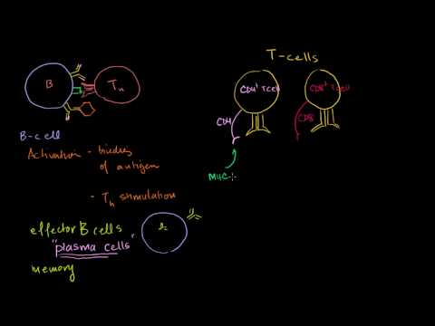
Click on the image above for more content
Review Questions
Recall
1. List three parts of the lymphatic system and their functions.
2. What are antigens, and how do lymphocytes “recognize” them?
3. How do plasma cells form, and how do they help fight pathogens?
4. Describe one way that cytotoxic T cells destroy cells infected with viruses.
5. What is immunity? What role do memory cells play in immunity?
Apply Concepts
6. If a disease destroyed a person’s helper T cells, how might this affect the ability to launch an immune response?
Think Critically
7. Compare and contrast humoral and cell-mediated immune responses.
8. How is active immunity different from passive immunity? Why does active immunity last longer?
9. Explain how immunization prevents a disease such as measles, which is caused by a virus.
Points to Consider
Sometimes the immune system makes mistakes and things go wrong.
-
What if the immune system responded to a harmless allergen as though it were a deadly pathogen? What might happen?
-
What if the immune system responded to normal body cells as though they were foreign invaders? Would the immune system destroy the body cells?
-
What if pathogens attacked and destroyed cells of the immune system itself? Would the immune system still be able to defend the body?
Immune System Diseases
Lesson Objectives
-
Explain why allergies occur, and identify common allergens.
-
Describe how autoimmune diseases affect the body.
-
Define immunodeficiency, and list reasons for it.
-
Explain how HIV is transmitted and how it causes AIDS.
Vocabulary
-
acquired immunodeficiency syndrome (AIDS)
-
allergen
-
allergy
-
autoimmune disease
-
human immunodeficiency virus (HIV)
-
immunodeficiency
Introduction
Your immune system usually protects you from pathogens and keeps you well. However, like any other body system, the immune system itself can develop problems. Sometimes it responds to harmless foreign substances as though they were pathogens. Sometimes it attacks the body’s own cells. Certain diseases can also attack and damage the immune system and interfere with its ability to defend the body.
Allergies
An
allergy
is a disease in which the immune system makes an inflammatory response to a harmless antigen. Any antigen that causes an allergy is called an
allergen.
Allergens may be inhaled or ingested, or they may come into contact with the skin. Two common causes of allergies are shown in
Figure
below
. Inhaling ragweed pollen may cause coughing and sneezing. Skin contact with oils in poison ivy may cause an itchy rash.
Ragweed and poison ivy are common causes of allergies. Are you allergic to these plants?
The symptoms of allergies can range from mild to severe. Mild allergy symptoms are often treated with antihistamines. These are drugs that reduce or eliminate the effects of the histamines that cause allergy symptoms. The most severe allergic reaction is called anaphylaxis. This is a life-threatening response caused by a massive release of histamines. It requires emergency medical treatment. You can watch an animated video about how allergic reactions occur and how antihistamines can control them at this link:
http://www.youtube.com/watch?v=y3bOgdvV-_M
.
Autoimmune Diseases
Autoimmune diseases
occur when the immune system fails to recognize the body’s own molecules as “self,” or belonging to the person. Instead, it attacks body cells as though they were dangerous pathogens. Some relatively common autoimmune diseases are listed in
Table
below
. These diseases cannot be cured, although they can be treated to relieve symptoms and prevent some of the long-term damage they cause.
|
Name of Disease
|
Tissues Attacked by Immune System
|
Results of Immune System Attack
|
|
Rheumatoid arthritis
|
tissues inside joints
|
joint damage and pain
|
|
Type 1 diabetes
|
insulin-producing cells of the pancreas
|
inability to produce insulin, high blood sugar
|
|
Multiple sclerosis
|
myelin sheaths of central nervous system neurons
|
muscle weakness, pain, fatigue
|
|
Systemic lupus erythematosus
|
joints, heart, other organs
|
joint and organ damage and pain
|
Why does the immune system attack body cells? In some cases, it’s because of exposure to pathogens that have antigens similar to the body’s own molecules. When this happens, the immune system not only attacks the pathogens. It also attacks body cells with the similar molecules.
Immunodeficiency
Immunodeficiency
occurs when the immune system is not working properly. As a result, it cannot fight off pathogens that a normal immune system would be able to resist. Rarely, the problem is caused by a defective gene. More often, it is acquired during a person’s lifetime. Immunodeficiency may occur for a variety of reasons:
-
The immune system naturally becomes less effective as people get older. This is why older people are generally more susceptible to disease.
-
The immune system may be damaged by other disorders, such as obesity or drug abuse.
-
Certain medications can suppress the immune system. This is an intended effect of drugs given to people with transplanted organs. In many cases, however, it is an unwanted side effect of drugs used to treat other diseases.
-
Some pathogens attack and destroy cells of the immune system. An example is the virus known as HIV. It is the most common cause of immunodeficiency in the world today. Compromised immune systems are discussed at
http://www.youtube.com/watch?v=usRofaZEteY
(2:36).
HIV and AIDS
Human immunodeficiency virus (HIV)
is a virus that attacks the immune system. An example of HIV is shown in
Figure
below
. Many people infected with HIV eventually develop
acquired immune deficiency syndrome (AIDS).
This may not occur until many years after the virus first enters the body.
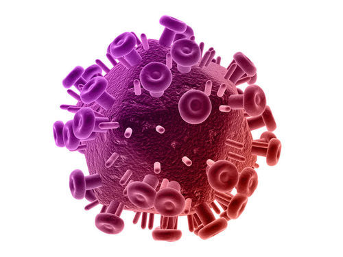
HIV is a virus that attacks cells of the immune system.
HIV Transmission
HIV is transmitted, or spread, through direct contact of mucous membranes or body fluids such as blood, semen, or breast milk. As shown in
Figure
below
, transmission of the virus can occur through sexual contact or the use of contaminated hypodermic needles. It can also be transmitted through an infected mother’s blood to her baby during late pregnancy or birth or through breast milk after birth. In the past, HIV was also transmitted through blood transfusions. Because donated blood is now screened for HIV, the virus is no longer transmitted this way.
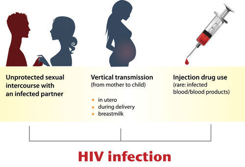
HIV may be transmitted in all of the ways shown here. Based on how HIV is transmitted, what can people do to protect themselves from becoming infected? What choices can they make to prevent infection?
HIV and the Immune System
HIV infects and destroys helper T cells. As shown in
Figure
below
, the virus injects its own DNA into a helper T cell and uses the T cell’s “machinery” to make copies of itself. In the process the T cell is destroyed, and the virus copies go on to infect other helper T cells. You can watch an animation showing how HIV infects T cells at this link:
http://www.youtube.com/watch?v=9leO28ydyfU
.
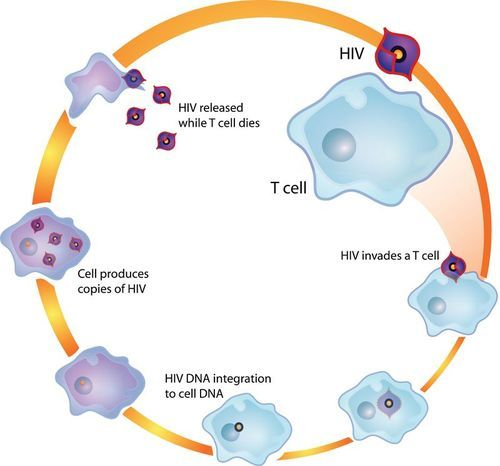
This diagram shows how HIV infects and destroys T cells.
HIV is able to evade the immune system and keep destroying T cells. This occurs in two ways:
-
The virus frequently mutates and changes its surface antigens. This prevents antigen-specific lymphocytes from developing that could destroy cells infected with the virus.
-
The virus uses the plasma membranes of host cells to hide its own antigens. This prevents the host’s immune system from detecting the antigens and destroying infected cells.
As time passes, the number of HIV copies keeps increasing, while the number of helper T cells keeps decreasing. The graph in
Figure
below
shows how the number of T cells typically declines over a period of many years following the initial HIV infection. As the number of T cells decreases, so does the ability of the immune system to defend the body. As a result, an HIV-infected person develops frequent infections. Medicines can slow down the virus but not get rid of it, so there is no cure at present for HIV infections or AIDS. There also is no vaccine to immunize people against HIV infection, but scientists are working to develop one.
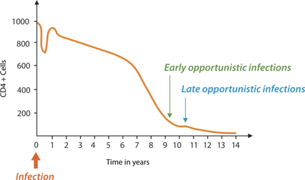
It typically takes several years after infection with HIV for the drop in T cells to cripple the immune system. What do you think explains the brief spike in T cells that occurs early in the HIV infection shown here?
AIDS
AIDS is not a single disease but a set of diseases. It results from years of damage to the immune system by HIV. It occurs when helper T cells fall to a very low level and opportunistic diseases occur (see
Figure
above
). Opportunistic diseases are infections and tumors that are rare except in people with immunodeficiency. The diseases take advantage of the opportunity presented by people whose immune systems can’t fight back. Opportunistic diseases are usually the direct cause of death of people with AIDS. You can watch a video showing when an HIV infection becomes AIDS at this link:
http://www.youtube.com/watch?v=68I7JlVhuhY
. AIDS and HIV were first identified in 1981. Scientists think that the virus originally infected monkeys but then jumped to human populations, probably sometime during the early to mid-1900s. This most likely occurred in West Africa, but the virus soon spread around the world (see
Figure
below
). Since then, HIV has killed more than 25 million people worldwide. The hardest hit countries are in Africa, where medicines to slow down the virus are least available. The worldwide economic toll of HIV and AIDS has also been enormous.

This map shows the number of people in different countries with HIV infections and AIDS in 2008. The rate of spread of the infection is higher Africa than in the U.S., yet the U.S. has a relatively large number of people with HIV infections and AIDS. Why might there be more survivors with HIV infections and AIDS in the U.S. than in Africa?
KQED: HIV Research: Beyond the Vaccine
Over the past 15 years, the number of people who die of AIDS each year in the United States has dropped by 70 percent. But AIDS remains a serious public health crisis among low-income African-Americans, particularly women. And in sub-Saharan Africa, the virus killed more than 1.6 million people in 2007. Innovative research approaches could lead to new treatments and possibly a cure for AIDS. HIV/AIDS has been described as a disease of poverty. Individuals with poor access to health care are less likely to see a doctor early on in their HIV infection, and thus they may be more likely to transmit the infection. HIV is now the leading cause of death for African American women between 24 and 35 years old.
For patients who have access to drugs, infection with the virus ceased to be a death sentence in 1995, when combinations of drugs called highly active antiretroviral therapy (HAART) were developed. For some patients, drugs can reduce the amount of virus to undetectable levels. But some amount of virus always hides in the body's immune cells and attacks again if the patient stops taking their medication. Researchers are working on developing a drug to wipe out this hidden virus, which could mean the end of AIDS. See
http://www.kqed.org/quest/television/hiv-research-beyond-the-vaccine
for further information.

Click on the image above for more content
Lesson Summary
-
Allergies occur when the immune system makes an inflammatory response to a harmless antigen. An antigen that causes an allergy is called an allergen.
-
Autoimmune diseases occur when the immune system fails to distinguish self from non-self. As a result, the immune system attacks the body’s own cells.
-
In an immunodeficiency disease, the immune system does not work normally. As a consequence, it cannot defend the body.
-
HIV is a virus that attacks cells of the immune system and eventually causes AIDS. It is the chief cause of immunodeficiency in the world today.
Review Questions
Recall
1. What is an allergen? Give two examples.
2. Define anaphylaxis. What causes the symptoms of anaphylaxis?
3. What is an autoimmune disease? Name an example.
4. List three possible reasons for acquired immunodeficiency.
5. Identify two ways that HIV can be transmitted.
Apply Concepts
6. Rheumatic fever is caused by a virus that has antigens similar to molecules in human heart tissues. When the immune system attacks the virus, it may also attack the heart. What type of immune system disease is rheumatic fever? Explain your answer.
7. Draw a graph to show the progression of an untreated HIV infection. Include a line that shows how the number of HIV copies changes through time. Include another line that shows how the number of helper T cells changes through time.
Think Critically
8. Sometimes people with an allergy get allergy shots. They are injected with tiny amounts of the allergen that triggers the allergic reaction. The shots are repeated at regular intervals, and the amount of allergen that is injected each time gradually increases. How do you think this might help an allergy? Do you think this approach just treats allergy symptoms or might it cure the allergy?
9. Explain why opportunistic diseases are a sign of immunodeficiency.
Points to Consider
Pathogens such as HIV are not the only cause of human disease. Many other things in our environment can also make us sick.
-
Can you think of other environmental factors that negatively affect human health? What about pollutants in the environment? What are their possible health effects?
-
Viruses cause some types of cancer, but cancer is more often caused by other environmental dangers. What environmental factors might increase the risk of cancer? Do you know what causes skin cancer, for example, or lung cancer?
Environmental Problems and Human Health
Lesson Objectives
-
Describe how carcinogens cause cancer and how cancer can be treated or prevented.
-
Identify causes of air pollution and its effects on human health.
-
Explain how bioterrorism threatens human health.
Vocabulary
-
Air Quality Index (AQI)
-
bioterrorism
-
carcinogen
Introduction
Besides pathogens, many other dangers in the environment may negatively affect human health. For example, air pollution can cause lung cancer. It can also make asthma and other diseases worse. Bioterrorism is another potential threat in the environment. It may poison large numbers of people or cause epidemics of deadly diseases.
Carcinogens and Cancer
A
carcinogen
is anything that can cause cancer. Cancer is a disease in which cells divide out of control. Most carcinogens cause cancer by producing mutations in DNA.
Types of Carcinogens
There are several different types of carcinogens. They include pathogens, radiation, and chemicals. Some carcinogens occur naturally. Others are produced by human actions.
-
Viruses cause about 15 percent of all human cancers. For example, the virus called hepatitis B causes liver cancer.
-
UV radiation is the leading cause of skin cancer. The radioactive gas known as radon causes lung cancer.
-
Tobacco smoke contains dozens of carcinogens, including nicotine and formaldehyde. Exposure to tobacco smoke is the leading cause of lung cancer.
-
Some chemicals that were previously added to foods, such as certain dyes, are now known to cause cancer. Cooking foods at very high temperatures also causes carcinogens to form (see
Figure
below
).
Barbecued foods are cooked at very high temperatures. This may cause carcinogens to form.
How Cancer Occurs
Mutations that lead to cancer usually occur in genes that control the cell cycle. These include tumor-suppressor genes and proto-oncogenes.
-
Tumor-suppressor genes normally prevent cells with damaged DNA from dividing. Mutations in these genes prevent them from functioning normally. As a result, cells with damaged DNA are allowed to divide.
-
Proto-oncogenes normally help control cell division. Mutations in these genes turn them into oncogenes. Oncogenes promote the division of cells with damaged DNA.
Cells that divide uncontrollably may form a tumor, or abnormal mass of cells. Tumors may be benign or malignant. Benign tumors remain localized and generally do not harm health. Malignant tumors are cancerous. There are no limits to their growth, so they can invade and damage neighboring tissues. Cells from malignant tumors may also break away from the tumor and enter the bloodstream. They are carried to other parts of the body, where new tumors may form. The most common and the most deadly cancers for U.S. adults are listed in
Table
below
.
|
Gender
|
Most Common Types of Cancer after Skin Cancer (% of all cancers)
|
Most Common Causes of Cancer Deaths (% of all cancer deaths)
|
|
Males
|
prostate cancer (33%), lung cancer (13%)
|
lung cancer (31%), prostate cancer (10%)
|
|
Females
|
breast cancer (32%), lung cancer (12%)
|
lung cancer (27%), breast cancer (15%)
|
More cancer deaths in adult males and females are due to lung cancer than any other type of cancer. Lung cancer is most often caused by exposure to tobacco smoke. What might explain why lung cancer causes the most cancer deaths when it isn’t the most common type of cancer?
Cancer Treatment and Prevention
Most cancers can be treated, and some can be cured. The general goal of treatment is to remove the tumor without damaging other cells. A cancer patient is typically treated in more than one way. Possible treatments include surgery, drugs (chemotherapy), and radiation. Early diagnosis and treatment of cancer lead to the best chance for survival. That’s why it’s important to know the following warning signs of cancer:
-
change in bowel or bladder habits
-
sore that does not heal
-
unusual bleeding or discharge
-
lump in the breast or elsewhere
-
chronic indigestion or difficulty swallowing
-
obvious changes in a wart or mole
-
persistent coughing or hoarseness
Having one or more warning signs does not mean you have cancer, but you should see a doctor to be sure. Getting routine tests for particular cancers can also help detect cancers early, when chances of a cure are greatest. For example, getting the skin checked regularly by a dermatologist is important for early detection of skin cancer (see
Figure
below
).
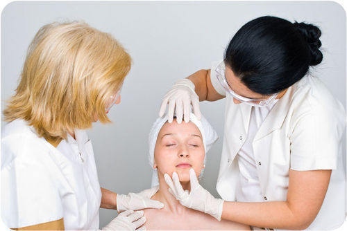
Regular checkups with a dermatologist can detect skin cancers early. Why is early detection important?
You can take steps to reduce your own risk of cancer. For example, you can avoid exposure to carcinogens such as tobacco smoke and UV light. You can also follow a healthy lifestyle. Being active, eating a low-fat diet, and maintaining a normal weight can help reduce your risk of cancer.
Air Pollution and Illness
Almost 5 million people die each year because of air pollution. In fact, polluted air causes more deaths than traffic accidents. Air pollution harms the respiratory and circulatory systems. Both outdoor and indoor air can be polluted.
Outdoor Air Pollution
The
Air Quality Index (AQI)
is an assessment of the pollutants in the outdoor air based on their human health effects. The health risks associated with different values of AQI are shown in
Figure
below
. When AQI is high, you should limit the time you spend outdoors. Avoiding exposure to air pollution can help limit its impact on your health. People with certain health problems, including asthma, are very sensitive to the effects of air pollution. They need to be especially careful to avoid it.
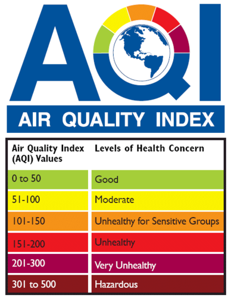
Air quality is especially important for sensitive people. They include people with asthma, other respiratory illnesses, and cardiovascular diseases.
AQI generally refers to the levels of ground-level ozone and particulates. Ozone is a gas that forms close to the ground when air pollutants are heated by sunlight. It is one of the main components of smog (see
Figure
below
). Smog also contains particulates. Particulates are tiny particles of solids or liquids suspended in the air. They are produced mainly by the burning of fossil fuels. The particles settle in airways and the lungs, where they cause damage.
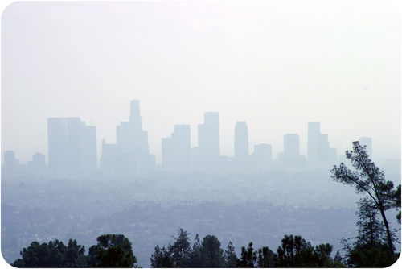
Smog clouds the city of Los Angeles, California. Visible air pollution in the form of smog is a sign that the air is unhealthy.
Indoor Air Pollution
Indoor air may be even more polluted than outdoor air. It may contain harmful substances such as mold, bacteria, and radon. It may also contain carbon monoxide. Carbon monoxide is a gas produced by furnaces and other devices that burn fuel. If it is inhaled, it replaces oxygen in the blood and quickly leads to death. Carbon monoxide is colorless and odorless, but it can be detected with a carbon monoxide detector like the one in
Figure
below
.
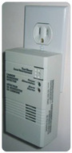
A carbon monoxide detector warns you if the level of the gas is too high.
Bioterrorism
Bioterrorism
is the intentional release or spread of agents of disease. The agents may be viruses, bacteria, or toxins produced by bacteria. The agents may spread through the air, food, or water; or they may come into direct contact with the skin. Two of the best known bioterrorism incidents in the U.S. occurred early in this century:
-
In 2001, letters containing anthrax spores were mailed to several news offices and two U.S. Senate offices. A total of 22 people were infected, and 5 of them died of anthrax.
-
In 2003, a deadly toxin called ricin was detected in a letter addressed to the White House. The letter was intercepted at a mail-handling facility off White House grounds. Fortunately, the ricin toxin did not cause any illnesses or deaths.
Lesson Summary
-
A carcinogen is anything that causes cancer. Most carcinogens produce mutations in genes that control the cell cycle.
-
Both outdoor and indoor air may contain pollutants that can cause human illness and death.
-
Bioterrorism is the intentional release or spread of agents of disease.
Review Questions
Recall
1. What is a carcinogen?
2. How do most carcinogens cause cancer?
3. Identify three ways cancer can be treated.
4. List four warning signs of cancer.
5. Define bioterrorism.
Apply Concepts
6. How can you use the Air Quality Index to protect your health?
Think Critically
7. Explain why ground-level ozone is usually a worse problem in the summer than in the winter in North America.
8. Compare and contrast pollutants in outdoor and indoor air, including their effects on human health.
Points to Consider
High levels of certain hormones can increase the risk of some types of cancer. For example, high levels of estrogen can increase the risk of breast cancer. Estrogen is a sex hormone.
-
What are sex hormones? How do sex hormones normally affect the body?
-
Do you think sex hormones might differ in males and females? Why?
Opening image courtesy of Bruce Wetzel/Harry Schaefer/National Cancer Institute (
http://visualsonline.cancer.gov/details.cfm?imageid=1762
), colorized by Sam McCabe, and is in the public domain.
References
-
(E coli) Rocky Mountain Laboratories, NIAID, NIH; (Herpes simplex) CDC/Dr. Erskine Palmer; (Death cap) Tatiana Bulyonkova (ressaure); (Giarda lamblia) CDC/Janice Carr.
(E coli) http://en.wikipedia.org/wiki/File:EscherichiaColi_NIAID.jpg; (Herpes simplex) http://en.wikipedia.org/wiki/File:Herpes_simplex_virus_TEM_B82-0474_lores.jpg; (Death cap) http://www.flickr.com/photos/ressaure/6580918185/; (Giarda lamblia) http://en.wikipedia.org/wiki/File:Giardia_lamblia_SEM_8698_lores.jpg
. (E coli) Public Domain; (Herpes simplex) Public Domain; (Death cap) CC-BY-NC-SA 2.0; (Giarda lamblia) Public Domain
-
James Gathany/Centers for Disease Control and Prevention.
http://commons.wikimedia.org/wiki/File:Sneeze.JPG
. Public Domain
-
Image Copyright n.n, 2010, modified by CK-12 Foundation.
http://www.shutterstock.com
. Used under license from Shutterstock.com
-
Image copyright Sebastian Kaulitzki, 2010.
http://www.shutterstock.com
. Used under license from Shtuterstock.com
-
Mariana Ruiz Villarreal (LadyofHats) for CK-12 Foundation. Human lymphatic system.. CC-BY-NC-SA 3.0
-
CK-12 Foundation. . CC-BY-NC-SA 3.0
-
Courtesy of the National Institutes of Health and DO11.10.
http://en.wikipedia.org/wiki/File:B_cell_activation.png
. Public Domain
-
Fvasconcellos.
http://en.wikipedia.org/wiki/Image:Antibody.svg
. Public Domain
-
Courtesy of the National Institutes of Health and DO11.10.
http://commons.wikimedia.org/wiki/File:Antigen_presentation.jpg
. Public Domain
-
Urutseg, modified by LadyofHats for CK-12 Foundation.
http://commons.wikimedia.org/wiki/File:Cytotoxic_T_cell.jpg
. Public Domain
-
(Ragweed) Homer Edward Price; (Poison ivy) John J. Mosesso/National Biological Information Infrastructure.
(Ragweed) http://www.flickr.com/photos/28340342@N08/2976017730/; (Poison ivy) http://life.nbii.gov/dml/mediadetail.do?id=703&pt=l2Search&navbar=page1_view1_title_asc_15
. (Ragweed) CC-BY 2.0; (Poison ivy) Public Domain
-
Image Copyright Sebastian Kaulitzki, 2010.
http://www.shutterstock.com
. Used under license from Shutterstock.com
-
CK-12 Foundation. . CC-BY-NC-SA 3.0
-
LadyofHats for CK-12 Foundation. . CC-BY-NC-SA 3.0
-
CK-12 Foundation. . CC-BY-NC-SA 3.0
-
CK-12 Foundation, based on map created by Canuckguy and data from the UNAIDS Global Report on the Global Aids Epidemic 2012.
Map: http://commons.wikimedia.org/wiki/File:People_living_with_HIV_AIDS_world_map.PNG, data: http://www.unaids.org/globalreport/
. CC-BY-NC-SA 3.0
-
Image copyright Robert Anthony, 2010.
http://www.shutterstock.com
. Used under license under Shutterstock.com
-
Image courtesy of Blaj Gabriel, 2010.
http://www.shutterstock.com
. Used under license from Shutterstock.com
-
Courtesy of EPA.
http://www.epa.gov/oar/airtrends/2007/graphics/AQI_textbox.gif
. Public Domain
-
Image Copyright mikeledray, 2010.
http://www.shutterstock.com
. Used under license from Shutterstock.com
-
SineWave.
Home carbon monoxide detector
. Public Domain
%20http://en.wikipedia.org/wiki/File:EscherichiaColi_NIAID.jpg;%20(Herpes%20simplex)%20http://en.wikipedia.org/wiki/File:Herpes_simplex_virus_TEM_B82-0474_lores.jpg;%20(Death%20cap)%20http://www.flickr.com/photos/ressaure/6580918185/;%20(Giarda%20lamblia)%20http://en.wikipedia.org/wiki/File:Giardia_lamblia_SEM_8698_lores.jpg){kind=link}
{kind=link}
{kind=link}
{kind=link}
{kind=link}
{kind=link}
{kind=link}
{kind=link}
{kind=link}